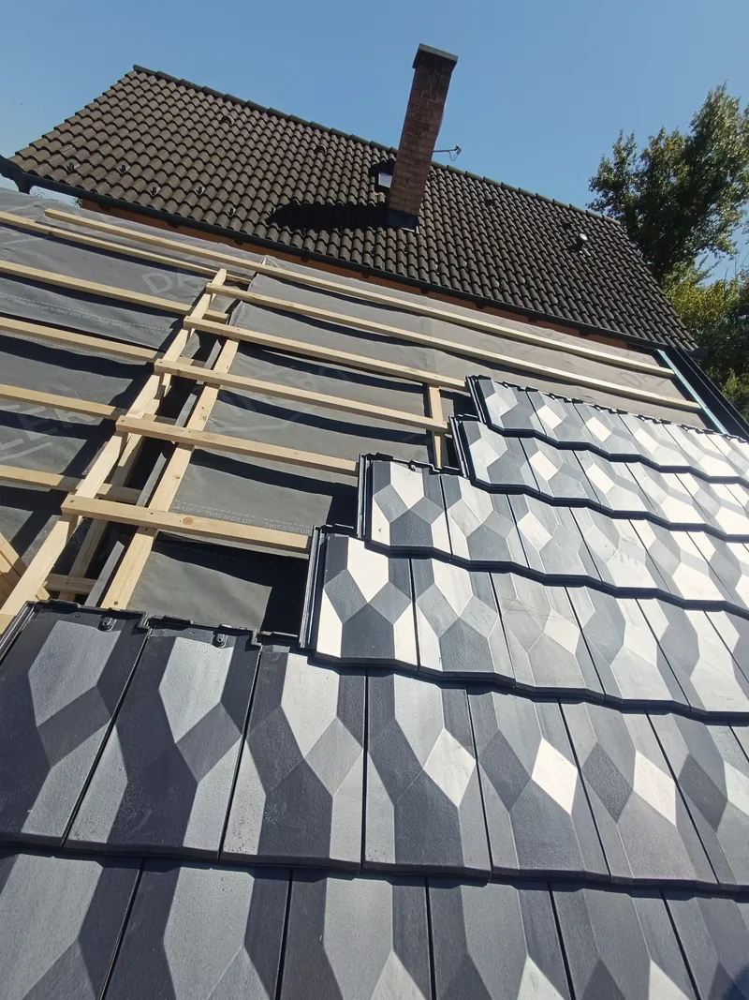
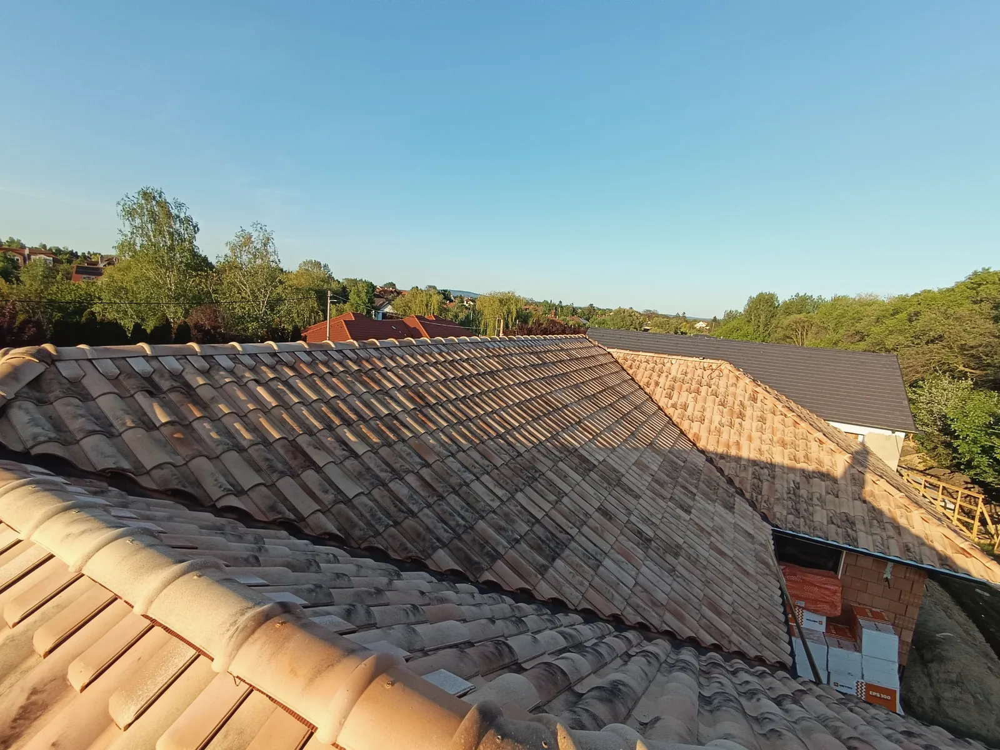
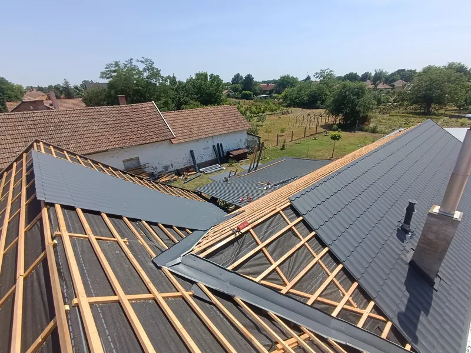
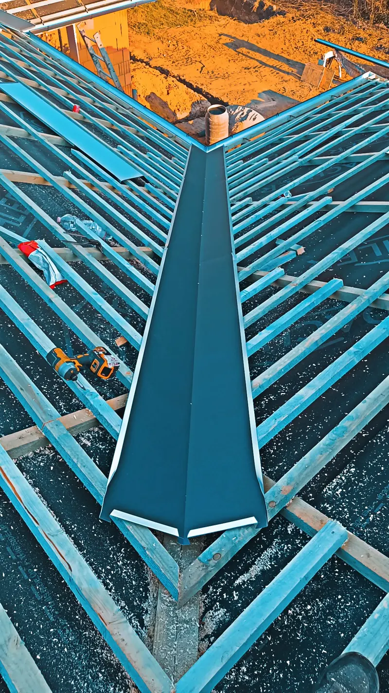
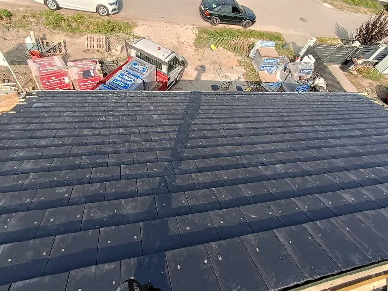
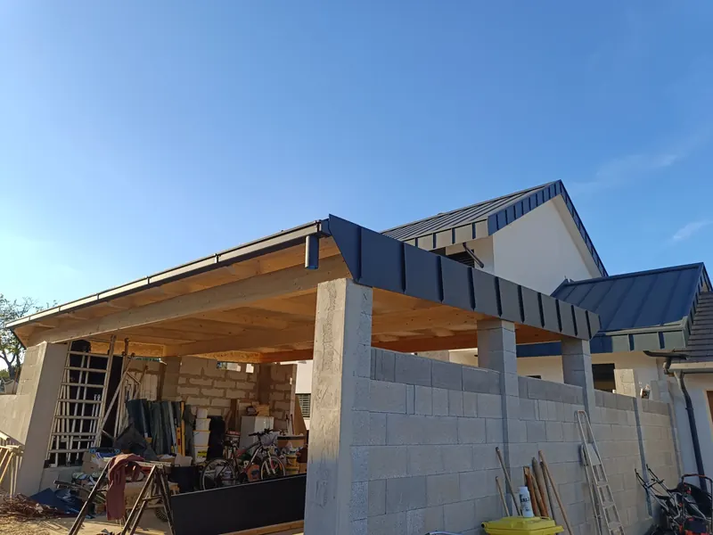
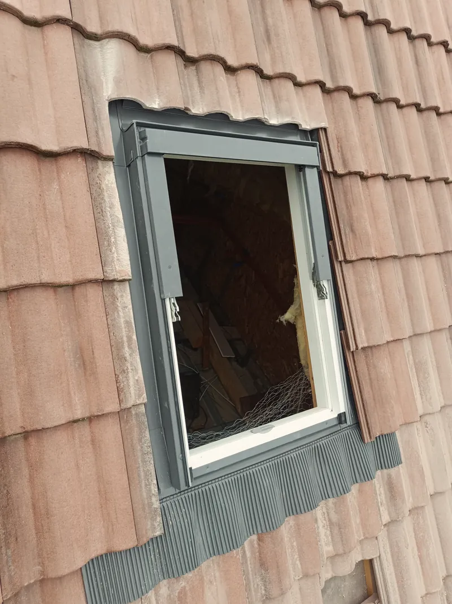
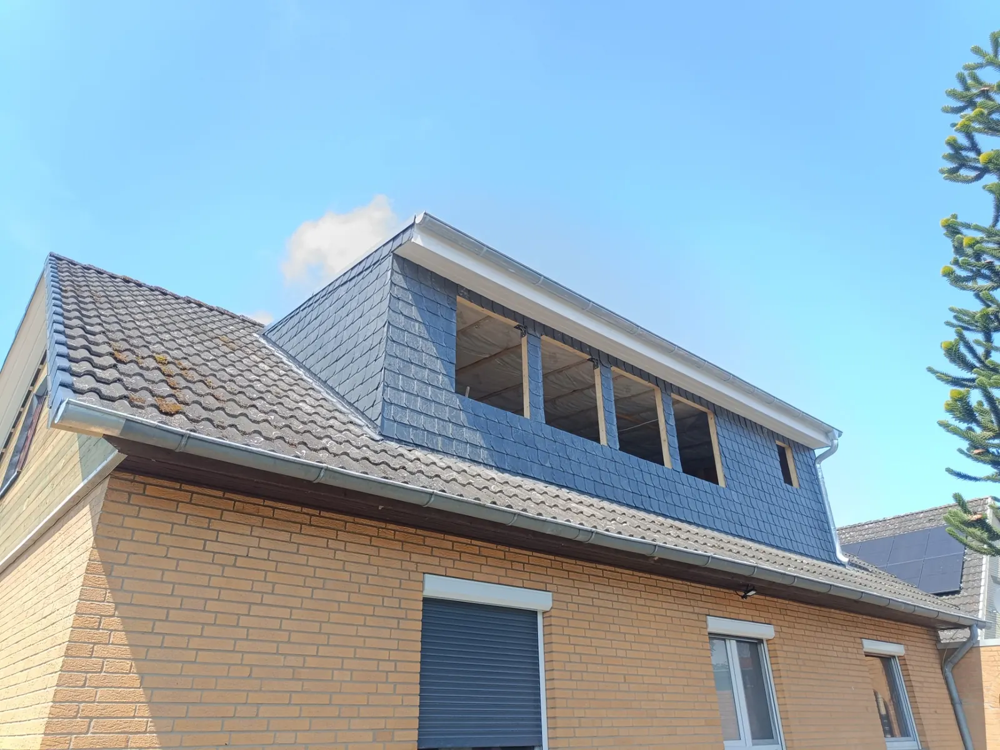

Tetőfedés
Új tető, teljes felújítás vagy javítás, akár a tetőszerkezettel együtt.

Tetőfedés, lemezfedés, bádogozás
Új tető, felújítás, javítás és bádogos munkák egy csapattól, garanciával. Bugyiból indulunk, 200 km‑es körzetben dolgozunk.
A gerinctől az ereszcsatornáig minden munkát egy csapat végez.

Új tető, teljes felújítás vagy javítás, akár a tetőszerkezettel együtt.

Cserepes és trapézlemez lakóházra, garázsra, melléképületre.

Ereszcsatorna, lefolyó, kemény szegély, vápa- és kéménybádogozás.

PVC-lemezes és bitumenes vízszigetelés lapostetőre, garázsra, teraszra.

Fedett terasz, pergola, kocsibeálló szerkezettel és fedéssel.

Felépítmény, tetőablak, ereszalj, egyedi formájú tetők.

Bontás, új felépítmény, fedés és bádogozás – egy csapat, egy felelős. A cserép csak a felszín: a tető attól tartós, ami alatta van, ezért a fóliát, a lécezést és a szegélyeket ugyanolyan gondosan csináljuk, mint a látható részt.
Négy lépés a hívástól az átadásig.
Hívjon vagy írjon, pár kérdés után már tudja, mire számíthat.
Ingyenes helyszíni felmérés és írásos árajánlat.
Egyeztetett kezdés, rendezett munkaterület, folyamatos tájékoztatás.
Közös bejárás, takarítás, számla és garancia.
Minden kép a saját munkánkról készült.
Összeszokott tetőfedő csapat vagyunk. Évek óta új tetőt építünk, régit újítunk fel, javítunk és bádogozunk.
Ugyanazok mérik fel a tetőt, akik megcsinálják, ezért a felmérésen elhangzottak a kivitelezésnél is érvényesek. Pontosan megbeszéljük, mi készül, miből és mennyiért – és tartjuk magunkat hozzá.
Ha a válasz nincs itt, hívjon nyugodtan.
Semennyibe. Kimegyünk, megnézzük a tetőt, és írásos árajánlatot adunk. Ez semmire nem kötelezi.
A mérettől és a munka fajtájától függ. Egy átlagos családi ház átfedése általában néhány nap, egy javítás gyakran egy nap. A felméréskor pontos időt mondunk.
Igen. Beázásnál először az okát keressük meg – kémény, vápa, szegély –, és azt javítjuk, nem csak a foltot.
Bugyiból 200 km‑es körzetben: Budapest, Kecskemét, Szolnok, Csongrád, Hódmezővásárhely, Szeged és környékük.
Igen, magánszemélynek és cégnek is, az elvégzett munkára garanciával.
A leggyorsabb a telefon: pár perc alatt átbeszéljük, és időpontot egyeztetünk a felmérésre.
+36 70 265 6704